Your first look at God’s Eye
This guide assumes you have never used the app. Start with the short practice exercise in chapter 2. Then open the chapter for the function you need.
Before you open the app
Use a desktop or laptop with a mouse or trackpad and a browser window of at least 1280 × 720 pixels. A larger window makes the controls easier to read. Phones and tablets are not suitable for this workspace. Keep an internet connection available for maps and data feeds.
Open the app address supplied by your administrator. Your exact email address must be approved first. Enter it on the login page and click Send Login Link. Open the email from no-reply@norsaga.com (sender name: NorSaga God´s Eye Access) within ten minutes. Click the link, then Confirm Sign-In. On My Access, choose Open God’s Eye. Wait for the globe and MARITIME WORKSPACE to appear.
God’s Eye puts a map, moving objects and information from different sources in one place. You choose an area, turn on the information you want, and click an object to inspect it. A layer is one category of information, such as vessels or wind.
Your personal login
There is no shared password. The email link is personal, works once and expires after ten minutes. Do not forward it. The page always says a link will be sent if the address is approved; this does not mean an unregistered address has access. If no email arrives, check your spam folder and ask the administrator to check your address.
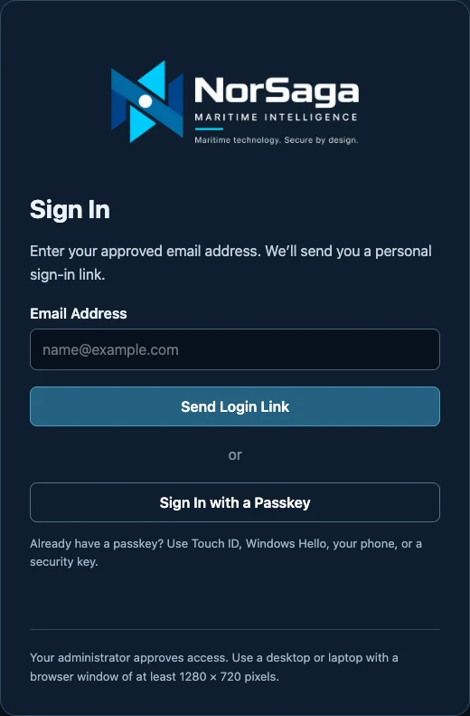
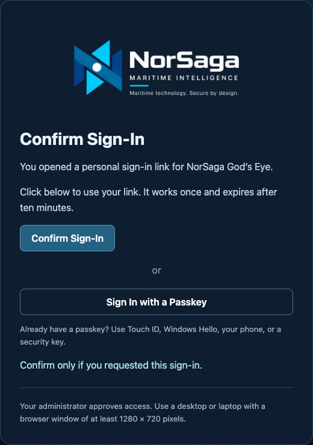
Passkeys and My Access
A passkey is a login key protected by your device, usually using Touch ID, Windows Hello or a security key. Ordinary users may keep using email links or choose Create Passkey for quicker login. Follow your browser’s instructions. A reserve passkey should be on a second device or security key.
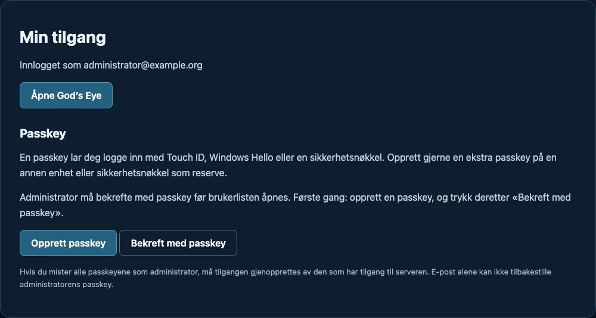
For the administrator
After confirming with a passkey, enter each person’s name and exact email under Approved Users. Choose Approve User. They can now request their own login email; an invitation is not sent automatically. Block Access ends their active access too. Confirm with a passkey again when administration expires after fifteen minutes. Email alone cannot reset an existing administrator passkey; contact the server operator if all keys are lost.
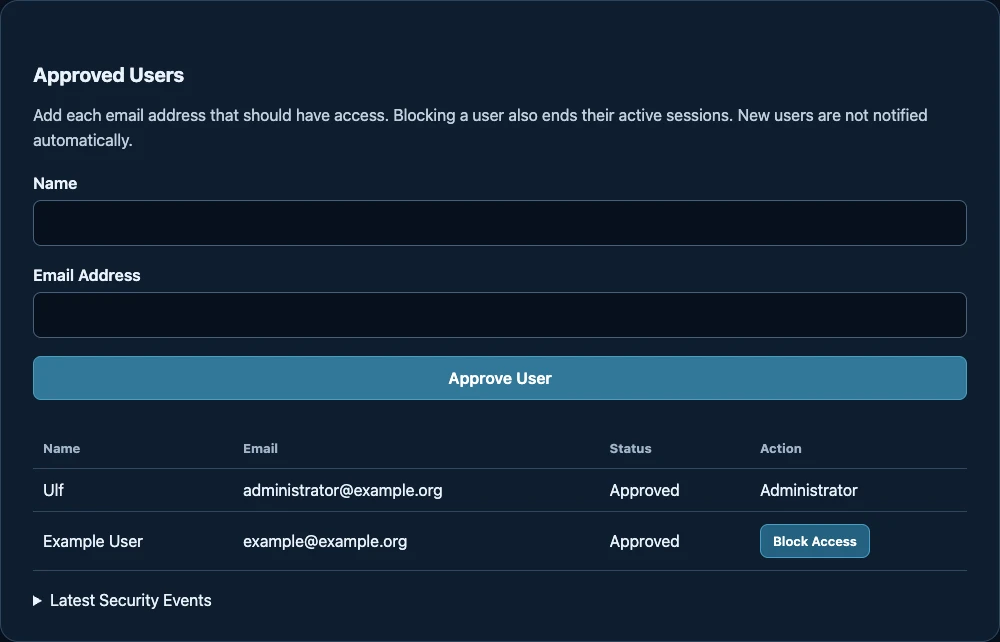
Use MY ACCESS at the top of the workspace to return to your account. LOG OUT ends your server session. You must sign in again after thirty minutes without activity, or after eight hours even if you have been working.
How to use this manual
Choose a chapter from the menu on the left, or use the Next button at the bottom. Click any screenshot to enlarge it. Download PDF saves the complete manual for offline reading. Print / PDF prints all chapters, including chapters you have not opened. On a narrow guide window, use the menu button at the top left.
A bold label such as CAPTURE SHOT is the exact control to look for in the app. Yellow numbers in screenshots match the explanation below each picture.
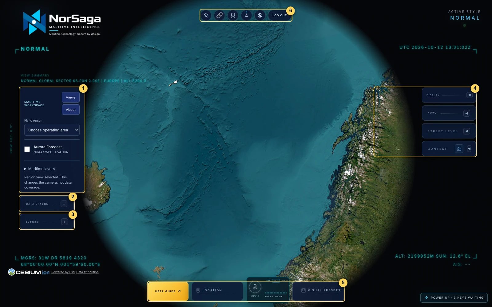
Make your first useful view
Try this exercise once. You will learn where the controls are and save a view you can reopen.
- In MARITIME WORKSPACE, open the Fly to region list and choose Norwegian Sea. Wait for the camera to finish moving.
- Open Maritime layers below the region list. Tick Vessels / AIS. AIS is the system used to report ship identities and positions.
- Click the + beside DATA LAYERS. Find Live Vessels and read the small source/status line. Wait for loading to finish. If it reports a missing source or an error, you can still practise navigation and saving a view.
- Close the large layer panel using its collapse button. Use the mouse wheel to zoom in a little. If vessel symbols are available, click one and read its name, position time and available details.
- Open Maritime layers again and tick Wind forecast if you want weather context. Read its source status. Wind is forecast information.
- Open SCENES. Click NEW, type My Norwegian Sea view in the name prompt and confirm. Then click CAPTURE SHOT.
- Check that Shot 1 appears. Move the camera somewhere else, then click LOAD beside Shot 1. The saved camera and configuration return.
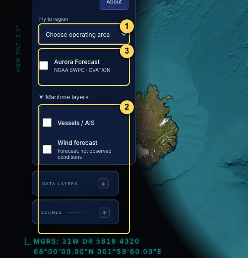
The starting view chooser
Click Views in Maritime Workspace to open Choose your maritime view. Global maritime, Baltic Sea and Arctic move the camera and request vessels, wind and weather imagery. Global overview moves to the globe overview and keeps your current layer selection. Aurora is enabled separately.
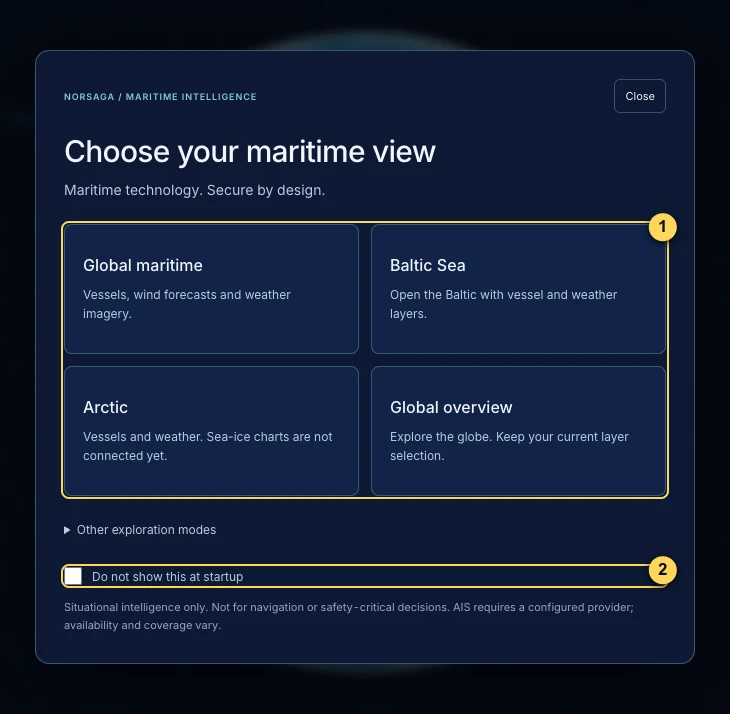
If a layer is already selected, choosing a starting view can leave it selected. Use the top Clear selected data layers button when you want to begin with an empty map.
Move around without getting lost
The globe is your main workspace. Start with region presets, then practise small camera movements.
| To do this | Use this control |
|---|---|
| Move around the globe | Hold the left mouse button on the map and drag. |
| Zoom in or out | Scroll the mouse wheel or use your trackpad scroll gesture. Make small movements. |
| Change the angle | Hold the right mouse button and drag, or use the top Tilt map to oblique view button. |
| Put north at the top | Click the N button at the top: Reset map to north up. |
| Recover the whole Earth | Click the globe icon at the top: Reset to full globe view. Your layer selection is managed separately. |
| Jump to a maritime area | Choose an area in Fly to region. |
Find a place by name or coordinates
- Click LOCATION along the bottom to open its tray.
- Click the magnifying glass, then click the Search any location… field.
- Type a specific place, such as Oslo, Norway, and press Enter. You can also enter latitude, longitude: 59.9139, 10.7522. Latitude comes first.
- Wait for the camera to move. If the place is not found, add a country name or use coordinates. A region preset is another way to navigate.
- Click LOCATION again to close the tray. The pin button keeps the tray open when you need it.
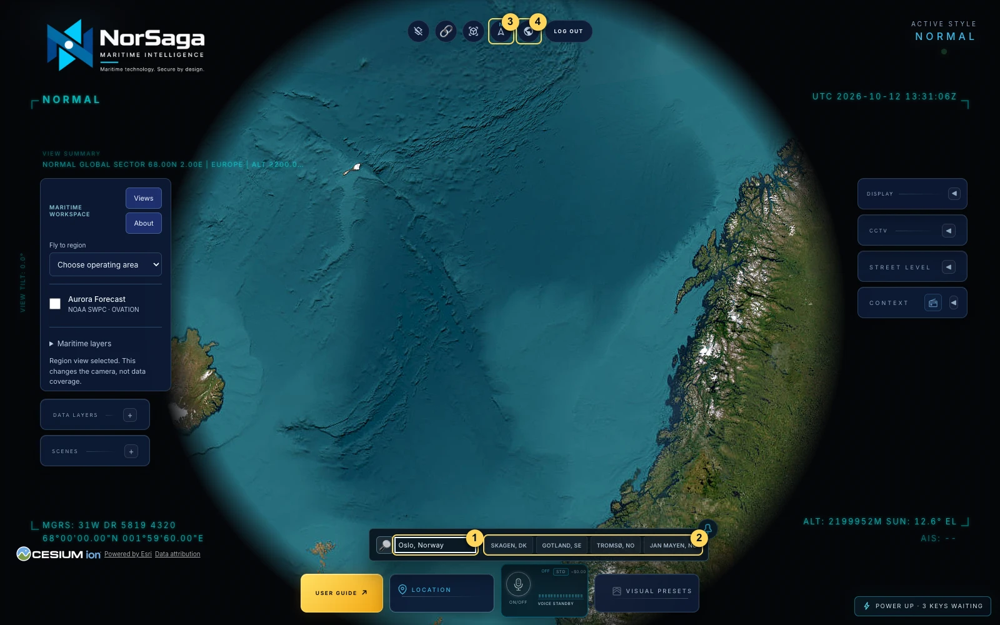
LOCATION is for places and coordinates. To find a moving object, enable its layer and select its map symbol or use the available Contacts controls. A vessel name is not a reliable place-search query.
Open, move and close panels
Click the + or arrow on a panel header to expand it. Click its collapse button to close it. Open only the panel you are using so the map stays visible.
CCTV and STREET LEVEL can be pulled out of their side rail: drag the header onto the map. Resize a floating panel by dragging its edge or corner. Double-click its header to snap it back to the rail.
Choose what appears on the map
A layer adds a category of information. Turning a layer on requests its data; the source line tells you whether usable information has arrived.
- Click + beside DATA LAYERS. The list is grouped by Movement, Cameras, Infrastructure, Events, Weather, Space Weather and Utilities.
- Find the layer you want, then click its OFF button. The selection changes and the app begins loading it.
- Read the source/status line below its name. Check whether it is loading, available, stale or unavailable. A selected button alone does not prove the feed is working.
- Collapse the panel and inspect the map. Click a visible symbol to see available details. Open the panel again and click the same toggle to turn that layer off.
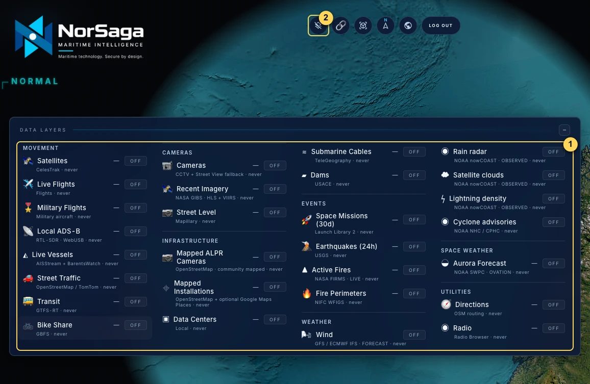
| Layer / function | What to look for |
|---|---|
| Live Vessels | AIS ship positions and details. Check the reported time, identity and source. Coverage can be incomplete or empty. |
| Live Flights / Military Flights | Observed aircraft positions and available flight details. Military Flights is a separate selection. Select an aircraft to inspect it. |
| Satellites | Objects positioned using an orbital model. These are predicted positions, not a camera image from space. |
| Street Traffic / Transit / Bike Share | Road activity, available transit services and bike-share information. Availability depends on the location and configured source. Some traffic is visualised rather than observed vehicle by vehicle. |
| Cameras / Street Level / Recent Imagery | Public camera images, recorded street photographs and satellite-image dates. They have different time meanings; see their chapters. |
| Mapped Installations / Mapped ALPR Cameras | Mapped site or roadside-camera locations. ALPR means automatic licence-plate recognition. Mapped locations do not provide plate reads or prove a device is operating. |
| Data Centers / Dams / Submarine Cables | Reference locations and infrastructure. These are background datasets, not live operational status. |
| Space Missions (30d) | Mission and launch information; open Context → SPACE MISSIONS to inspect available missions. |
| Earthquakes (24h) / Active Fires / Fire Perimeters | Recent earthquake reports, detected heat/fire points and mapped fire areas. A detection and a confirmed boundary are different types of information. |
| Wind / Rain radar / Satellite clouds / Lightning density / Cyclone advisories | Environmental context. Wind is a forecast; the other products carry their own observation or advisory times and coverage. |
| Aurora Forecast | NOAA space-weather forecast. Use the separate Aurora walkthrough. |
| Directions / Radio / Local ADS-B | Route tools, internet radio and an optional physical aircraft receiver. These are optional functions; see Context & Tools. |
Explore the aurora forecast
Aurora is available on its own. You do not need to enable vessels, wind or weather imagery first.
- In Maritime Workspace, choose Arctic overview or Svalbard from Fly to region.
- Tick Aurora Forecast directly below the region list. Alternatively, enable Aurora Forecast in DATA LAYERS. Wait for the NOAA source status.
- Read Forecast and the source time. The forecast time describes the future model estimate; the source time describes the input observation.
- Move the map so the place you want to inspect is in the centre. Click Read map center to read the nearest NOAA grid value.
- Use Subtle, Clear or Strong to change the overlay contrast. This changes visibility of the overlay, not the forecast.
- Untick Aurora Forecast when you have finished.
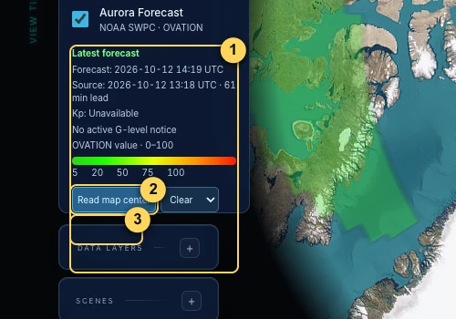
Play the NOAA image history
- Click ▶ NOAA loop. A separate player opens.
- Choose Northern hemisphere or Southern hemisphere, then Latest 30 minutes or Latest 24 hours. Wait for the images to load.
- Click Play to animate, then Pause to stop. Use Previous, Next or the timeline slider to inspect a single frame.
- Read Model frame below the player. Click Close to return to the map.
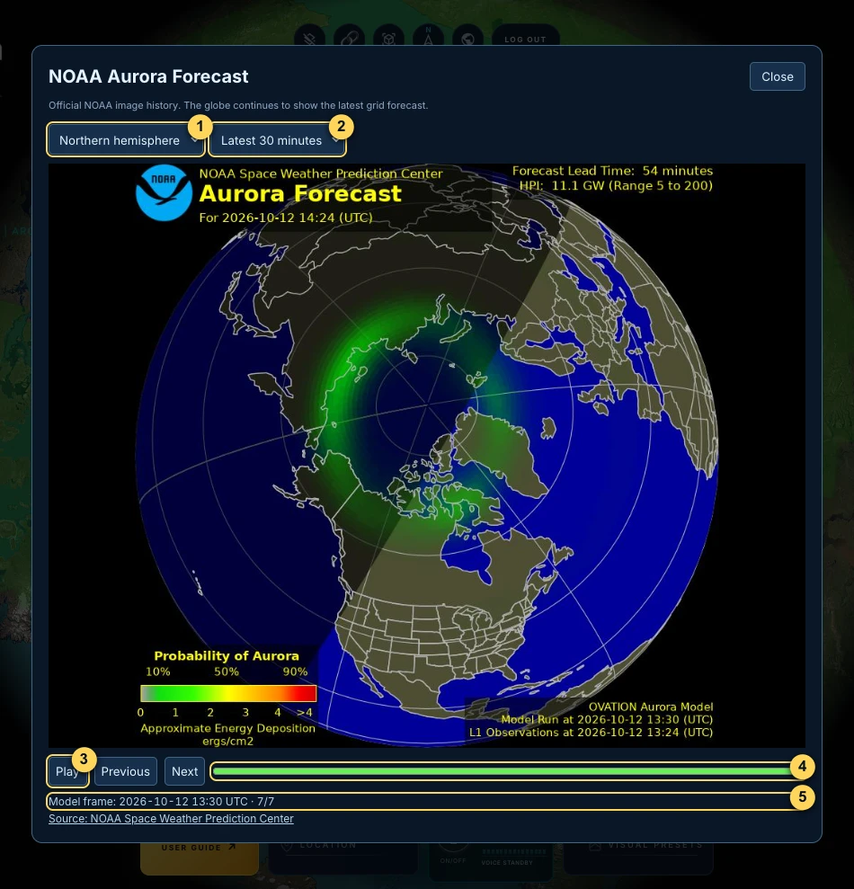
Look at satellite images from different dates
Recent Imagery helps you compare imagery of one area. These are acquired satellite images, not a live video feed.
- Zoom to the area you want to inspect. Use a local or regional view rather than the whole Earth.
- Open DATA LAYERS and enable Recent Imagery. Open its RECENT IMAGERY panel if it is collapsed.
- Click SELECT BOX, then drag a box around the area on the map. Or click USE VIEW to use the current view. Press Esc to cancel an unfinished box.
- Wait for dated image cards to appear. Read the date, sensor and cloud/coverage information. Choose a usable date to preview or pin using the shown controls.
- Choose a comparison mode: the image alone, against the basemap, or A/B for two image dates. For A/B, select the dates for both slots.
- When the divider is available, drag it to compare the sides. SWAP trades the sides. Use opacity to adjust the image strength.
- Open Details for acquisition times, source and coverage. Use EXPORT (or EXPORT A / EXPORT B) to download the displayed source image.
- Click CLEAR to remove the box and its images.
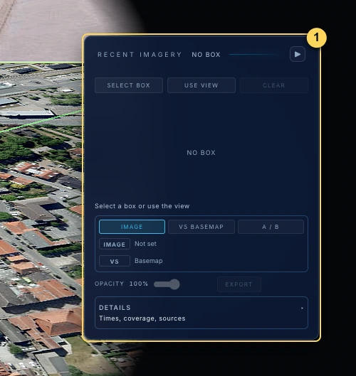
If you are using Google 3D, showing imagery can switch the map to Esri so the comparison divider works. CLEAR or disabling the layer releases that comparison. If the comparison map fails, read the notice: imagery may display without a swipe divider.
Open a camera image or a street photograph
CCTV can show a public camera still or video. Street Level shows recorded photographs. Check which product you are looking at.
CCTV: public camera images
- Navigate to your area, then open the CCTV panel on the right.
- Click CCTV OFF to enable Cameras. You can also enable Cameras in DATA LAYERS.
- Click NEAREST, choose a camera from the list, use PREV / NEXT, or select a camera marker on the map.
- Read the source badge and camera information. A still image refreshes according to its source; a video is available only when that camera provides it.
- Click FOCUS to move the map to the camera. COVERAGE displays its mapped viewing area; AUTO HOP cycles cameras. Turn auto-hop off to keep one camera selected.
- Use the enable button again to turn Cameras off when finished.
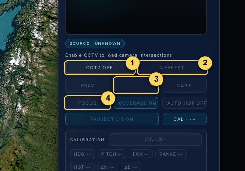
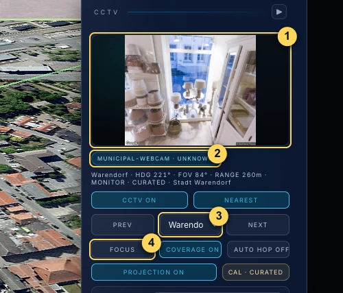
Norwegian road cameras from Statens vegvesen are also included when their source is available. Choose the camera by its label and check its source; the nearest available result may be far from your map centre.
PROJECTION places the camera image into the 3D view. Its alignment is an estimate. Leave ADJUST, SAVE CAL and RESET CAL for advanced calibration work; these controls change alignment, not the camera’s original image.
Street Level: recorded photographs
- Open STREET LEVEL on the right and click OFF, or enable Street Level in DATA LAYERS.
- Check the provider chips. Choose an available provider such as Mapillary. If a required token is missing, ask the administrator to configure it.
- Use ALL, 360° or FLAT to choose the photo type. Use SINCE to filter by date.
- Zoom into an area with mapped coverage and select an image marker. Read the capture date and photographer/source attribution.
- Use the image viewer’s sequence navigation to step through photos. EXPAND makes the image larger; FIT shows the whole image; FILL crops it to the frame.
- Turn FOLLOW on if you want the globe camera to align with the image view. Use × to close the selected image. Esc shrinks an expanded viewer.
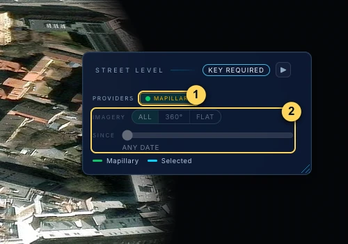
Move or resize the image viewer
Drag the CCTV or Street Level header onto the map to create a floating panel. Drag an edge or corner to resize it. Double-click the header to return it to its side rail. This helps when inspecting an image and the map together.
Save a view you can reopen
A Scene is a named collection of saved views. Each saved view is called a shot. A shot stores camera, visual and layer settings; it does not take a screenshot or freeze a live feed.
Create your first Scene
- Choose your location, zoom, viewing angle and layers first.
- Open SCENES on the left. Click NEW, enter a clear name and confirm. NEW creates the collection; it has not captured the map yet.
- Click CAPTURE SHOT. Check that Shot 1 appears in the list and the status reports it was captured.
- Double-click the shot name to rename it, for example Norwegian Sea overview, and press Enter.
- Move to another useful view and click CAPTURE SHOT again to add Shot 2.
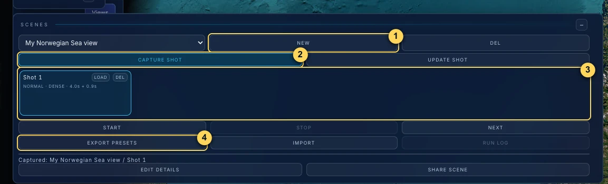
| Control | When to use it |
|---|---|
| Scene list | Choose the named Scene you want to work on. |
| LOAD | Restore a saved shot’s camera and configuration. |
| UPDATE SHOT | Select a shot by clicking its name, adjust the live view, then replace that shot’s saved setup. Use CAPTURE SHOT to add a new one instead. |
| START / STOP / NEXT | Play the Scene as a sequence, stop it, or advance to the next shot. Esc stops Scene playback. START plays views; it does not create a video file. |
| EXPORT PRESETS / IMPORT | Download a JSON file containing Scene presets, or choose a saved preset file to import. Keep an export before importing or making major changes. |
| DEL | Remove the selected Scene, or the individual shot beside that DEL button. Read the confirmation carefully. |
| RUN LOG | Download playback diagnostics after a run. This is a log, not the preset backup. |
Share a saved Scene as a file
- Choose your Scene in the SCENES list, then click SHARE SCENE.
- Read the Share selected scene window. It lists the shots, data packs and any unavailable layers or external-content notices.
- For an ordinary saved Scene, click Download scene JSON. This downloads the selected Scene’s authored settings and attribution.
- If a supplied Scene uses extra data-pack files, choose the files or folder requested, then use Download asset bundle. Only the included pack files travel with that bundle; external linked media is not automatically included.
- Close with Cancel or Esc. Give the downloaded file to the recipient; they use IMPORT to review it in their app.
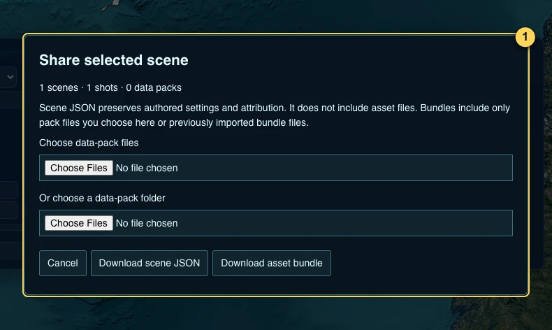
Import a Scene file without losing your work
- Click EXPORT PRESETS first and keep that backup. Applying an import replaces the current Scene project.
- Click IMPORT and choose the supplied JSON or bundle JSON file.
- Read Review scene import. Check the Scene/shot counts, missing-layer notices and any file or media requirements. Selecting the file only stages it for review.
- Click Apply import only when you want to replace your current project. Click Cancel or press Esc to keep the current project unchanged.
- After applying, choose a Scene, LOAD a shot and check its source status. Bundled files are held for this browser session; reimport the bundle after reloading if those files are needed again.
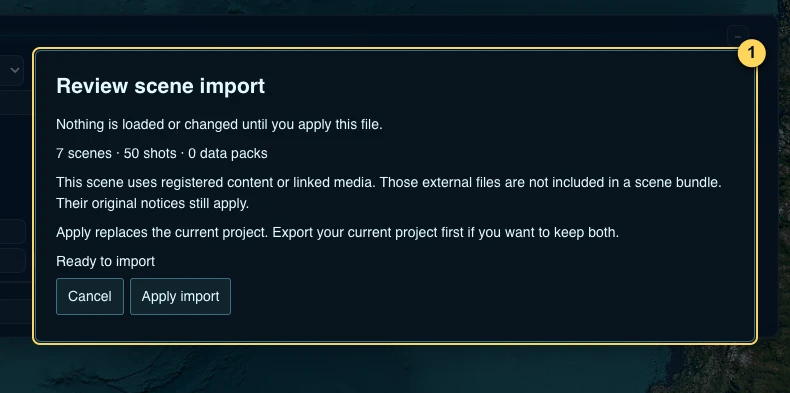
Advanced: EDIT DETAILS and interactive Scenes
EDIT DETAILS opens a draft editor for the selected shot’s camera, timing, anchors, data packs and actions. It contains JSON fields and is intended for advanced Scene authors. Beginners can use CAPTURE SHOT and UPDATE SHOT instead. Opening the editor does not save changes; Apply details validates and applies the draft, while Cancel or Esc discards it.
A supplied Scene can expose a Scene actions panel during playback. Select a feature or choose its named action using Tab and Enter. An action can reveal a source card or move to another part of the Scene. Follow its text and read any unavailable/cancelled message.
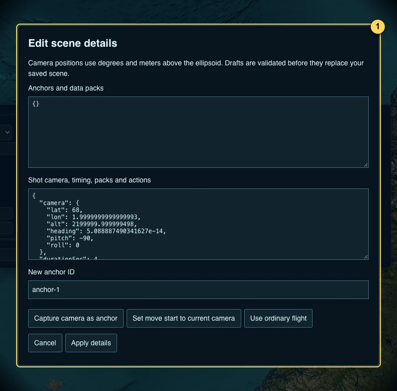
Share the current map view
- Set up the location, camera, layers and style you want the recipient to open.
- Click the chain-link icon at the top, labelled Copy share link. Check for the copy confirmation.
- Paste the copied link into your chosen message or document. The recipient opens it and uses their normal app access.
- A shared view restores supported view settings; objects and source availability can differ when it is opened. Use EXPORT PRESETS to transfer a whole Scene collection.
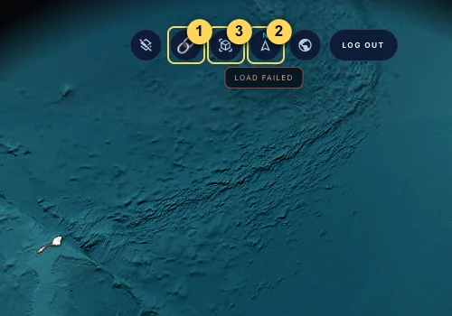
If the notice says Copy failed, wait a moment after adjusting the view, then copy the full app address from your browser’s address bar, including the part after #. A shared view link does not sign you in or grant access to a missing data provider.
Make the map easier to read
Start with Normal and a simple display. Change one option at a time so you can see what it does.
Choose a map and a visual style
- Click VISUAL PRESETS at the bottom.
- Under MAP SOURCE, choose an available map. Some maps need administrator configuration. A disabled option or fallback notice explains why it is unavailable.
- Select Normal for the standard appearance. CRT, NVG, FLIR, Anime, Noir and Snow apply visual effects. Click Normal to remove those effects.
- Click the pin if you want to keep this tray open; click it again to unpin.
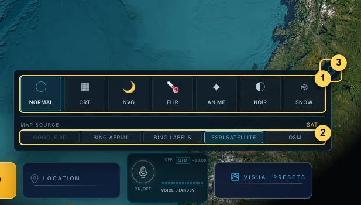
Reduce clutter in DISPLAY
Open DISPLAY on the right. HUD controls the information overlaid on the map; the Layout list offers Tactical, Operator, Minimal and Cyber. The detection button controls object labels and detection-style graphics. Its label shows the current mode: SPARSE, BALANCED or DENSE; DETECT is shown when off. Lower Density if too many labels overlap.
3D enables close-up aircraft models; Proximity limits them to nearby views. Scope controls the circular mask around the workspace. Bloom changes glow and Sharpen changes image sharpness. Cyber’s sonar-like display is an interface effect, not a real sonar measurement.
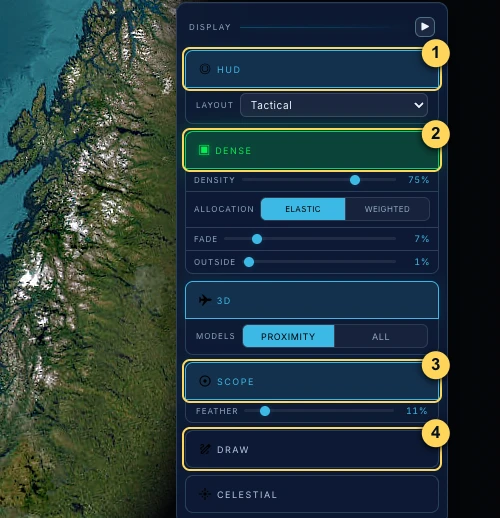
Draw a point, line or area
- In DISPLAY, click Draw. Choose the available shape: Area, Line or Pin.
- Enter an optional label and choose a colour. Click on the map to place a pin, or click successive points for a line or area.
- Double-click or press Enter to finish a line or area. Press Esc to cancel an unfinished shape.
- Read the resulting label or measurement. These marks are your annotations. Clear removes all annotations, so use it only when you want the whole board cleared.
Clean UI hides the interface for a clear view. Click EXIT CLEAN VIEW to return. Use your normal screenshot or screen-recording tool if you want an image or video file.
Inspect contacts and explore optional tools
Context collects information about contacts and space missions. Other optional layers provide routes, radio or local receiver input.
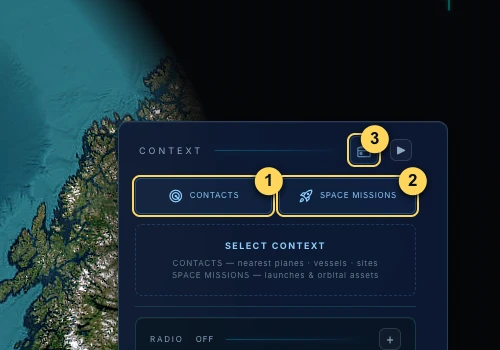
Inspect a vessel or aircraft
- Enable Live Vessels or Live Flights in DATA LAYERS and wait for source information.
- Click a visible object symbol. Read the available card details, including observation time and identity. Missing fields mean the source has not supplied them.
- Open CONTEXT and choose CONTACTS for nearby-object context. Use the contact selectors offered there to narrow the type or move between contacts.
- When a tracked aircraft exposes COCKPIT, click it to enter the aircraft view. Click EXIT COCKPIT or press Esc to return to the map. This is a visual reconstruction from available data.
Vessel speed can be shown in knots. Heading is the direction the vessel points; course is the direction it moves. A short displayed trail covers available received positions and is not guaranteed to be a complete voyage history.
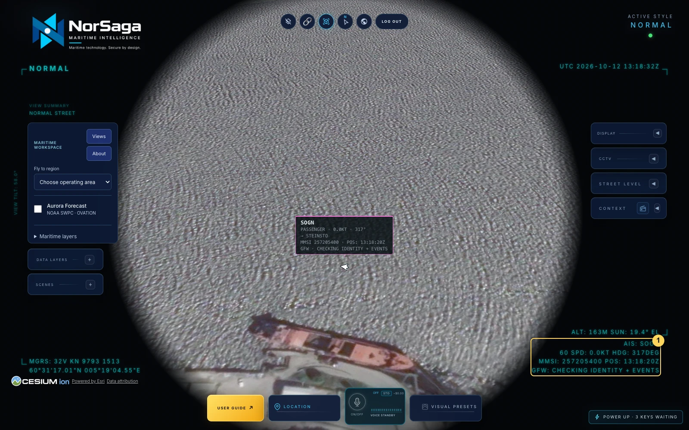
Optional Global Fishing Watch information
A selected vessel may show lines beginning GFW in its details or AIS readout. These can include identity attributes and counts of modelled activity/events when the provider is configured. CHECKING IDENTITY + EVENTS means enrichment is loading; NO IDENTITY MATCH means this lookup did not identify a match. Modelled activity is research context, not proof of a vessel’s actions. Missing GFW information does not prevent the AIS view from working.
Space missions
Choose SPACE MISSIONS in CONTEXT and select a mission from the available roster. Read the scheduled/status information and use the offered focus controls to inspect its launch site. Times and schedules can change; simulated replays illustrate a sequence rather than confirm an actual launch.
Radio
- Click the radio icon in the Context header and click ENABLE.
- Choose a station using its map marker or the previous/next controls. The detailed Radio section adds station-tag filters and tuner controls.
- Click PLAY. Adjust Volume. Click Pause or STOP in the applicable control to end playback. Audio starts only when you choose to play it.
Streaming connects to the broadcaster. AI voice and radio can compete for audio; read any takeover confirmation before continuing.
Directions and Local ADS-B
Directions: enable it in DATA LAYERS, then use its route controls to set a start and destination and inspect the returned route. Coverage and routing depend on the source. It is a planning illustration.
Local ADS-B: this requires a compatible physical RTL-SDR USB receiver. The Radio section has CONNECT and FM / ADS-B controls; follow the browser’s device chooser only when the receiver is attached. The same tuner is shared by FM and aircraft reception, so it cannot perform both at once. Beginners can leave Local ADS-B off.
Give one spoken instruction at a time
The AI Agent is an optional way to use the same map functions. You can learn and use the app with the ordinary controls first.
- Find AI AGENT in the bottom dock. OFF means no active voice session.
- Click the microphone ON/OFF button. Allow microphone access if your browser asks. Wait for the agent to become ready.
- With focus on the map rather than a text field, hold Space and say a short instruction, such as “Go to Oslo, Norway.” Release Space to send.
- Wait for the answer and check the resulting map change. Follow with one instruction, such as “Turn on live vessels” or “Reset to globe view.”
- Read the response card and any source/error notes. Ask another question only after the current action finishes.
- Click ON/OFF again to end the session.
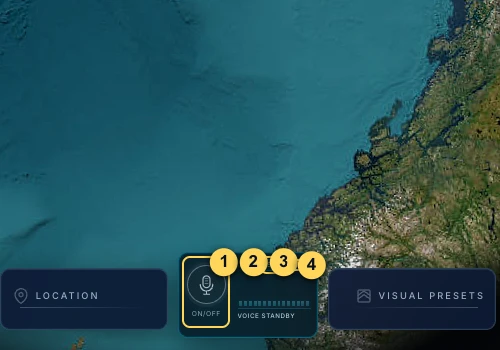
Good first requests include “Show the Norwegian Sea,” “Turn off wind,” and “How many ships are in view?” Data questions use loaded records from enabled layers; a count describes the available data, not every object that exists in the real world.
Know what the numbers mean
Check a source’s time and coverage before interpreting what you see. Different products have different update intervals.
| Status or time | What it means for you |
|---|---|
| OFF / never | This layer is off or has not loaded in this browser session. “Never” is not evidence that the source is broken. |
| Loading / connecting | A request or connection is in progress. Wait and read the status before assuming data has arrived. |
| Live / observed | The source reports observations. They can still have delay; check the position or observation timestamp. |
| Forecast | A model estimates conditions or positions at a stated time. Wind and Aurora are examples. |
| Stale / cached | Older data may still be visible. Use its original timestamp to judge age. |
| Empty coverage / no results | A source can answer successfully with no accepted objects in the covered area. Empty results are different from a connection error. |
| Unavailable / missing key / error | Usable source information could not be obtained. Read the reason and contact the administrator if configuration is needed. |
| UTC | A common worldwide time standard. Local time in Norway is UTC+1 in winter and UTC+2 in summer. The screenshot timestamps use UTC where labelled. |
A freshly downloaded image can show an older acquisition date. A recently received position can also have an older observation time. Use the time of the underlying observation, acquisition or forecast, rather than assuming the download time describes the event.
Small glossary
| Word | Plain meaning |
|---|---|
| MDA | Maritime Domain Awareness: understanding activity in the maritime area. |
| AIS / MMSI | AIS carries ship reports. MMSI is a vessel’s maritime radio identity number; check it when names are similar. |
| ADS-B | Aircraft broadcasts used by receivers and providers to report aircraft positions. |
| Layer / basemap | A layer adds data. The basemap is the background map or 3D world underneath it. |
| Scene / shot | A Scene is a named set of saved views. A shot is one camera and configuration within it. |
| HUD / heading / course | HUD is information overlaid on the map. Heading is where an object points; course is where it travels. |
| Latitude / longitude | Coordinates: latitude measures north/south; longitude measures east/west. Search expects latitude first. |
| Knots / km / m | Knots measure speed at sea; one knot is 1.852 km/h. km means kilometres; m means metres. |
| Coverage / resolution | Coverage is where data exists. Resolution is the level of detail it can show. |
| Provider / token | A provider supplies data. A token is a service credential configured by the administrator. |
| JSON | The file format used for exported Scene presets. Keep the file for IMPORT; you do not need to edit it. |
What is connected and what is not
The Arctic view provides vessels and weather when their sources are available. Its description states that sea-ice charts are not connected yet. The presence of a region preset does not imply all possible maritime datasets are available. Follow the actual source status in the app.
Fix common problems and practise safely
Most beginner problems can be resolved by resetting the camera, checking the source line or reopening a saved shot.
| What you see | What to do next |
|---|---|
| I cannot find the controls | Make the app window at least 1280 × 720. Exit Clean View if active. Look for + or arrows on the side-panel headers. |
| I am lost on the map | Click N to restore north, or the globe icon to restore the whole Earth. Choose Fly to region again. |
| No vessels or aircraft appear | Check that the correct layer is on, read its source status, wait for loading, and try another scale or area. Empty coverage is possible. |
| Objects are on screen but the feed says stale | Treat the displayed positions as older information. Read their observation time and do not describe them as current. |
| Search finds the wrong place | Add the country or use latitude, longitude. To inspect moving objects, use their layer and Contacts rather than the location field. |
| My map looks different from the guide | Choose Normal in Visual Presets. Check Map Source. Google 3D may fall back to another map if its source is unavailable. |
| A camera is blank | Try another camera with PREV / NEXT. Read the source badge. Some cameras supply stills, some video, and some are temporarily unavailable. |
| Street Level says a token is missing | Ask the administrator to configure Mapillary. Other functions can still be used. |
| Aurora is faint or missing | Check the source status, choose an Arctic region and try Clear or Strong contrast. Low-intensity model cells can be transparent. |
| No recent image is usable | Select a smaller area, try another date and inspect clouds/coverage. Read the comparison-map notice if there is no divider. |
| My Scene has no saved view | NEW creates a Scene; CAPTURE SHOT saves a view. Look for Shot 1 before leaving the panel. |
| A saved view changes after LOAD | LOAD restores its setup. Live objects update from current available sources; it is not an archived snapshot. |
| Scene controls are disabled | If playback is running, click STOP or press Esc before editing. |
| My floating panel is in the way | Double-click the CCTV or Street Level header to dock it again, or drag and resize it. |
| Voice does not work | Check microphone permission and the connection error. Use the normal controls and ask the administrator if service configuration is needed. |
| The app feels slow | Turn off unused layers, reduce labels and 3D models, close unused panels and return to Normal. Keep the practice view simple. |
Three short practice exercises
1. Navigation
Go to Baltic Sea. Zoom in a little, tilt the view, then restore north. Return to the globe. You finish when you can recover your view without reloading.
2. Aurora
Choose Arctic overview. Enable Aurora, read the map centre, open NOAA loop and select one frame. Close the player and turn Aurora off.
3. Save and return
Create a practice Scene, capture one shot, move to another region and LOAD the shot. Export the presets as a backup.
When you need help
Tell your administrator which function you used, the exact source/error text and what you expected. Include a screenshot if useful. Do not include login links, passkey details or provider credentials.
Click LOG OUT at the top of the app to return to its personal login screen. Keep a preset export if you plan to clear this browser’s stored data.